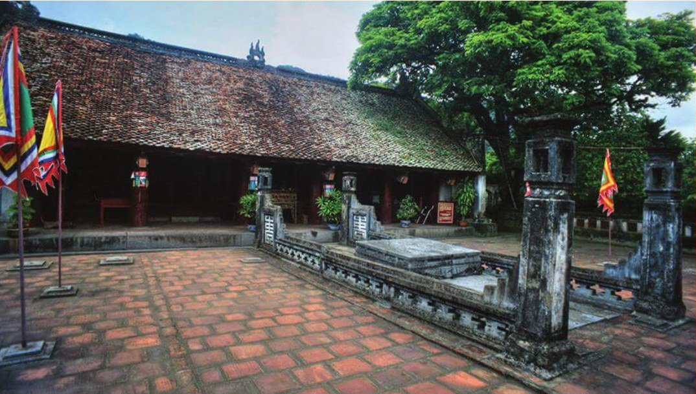
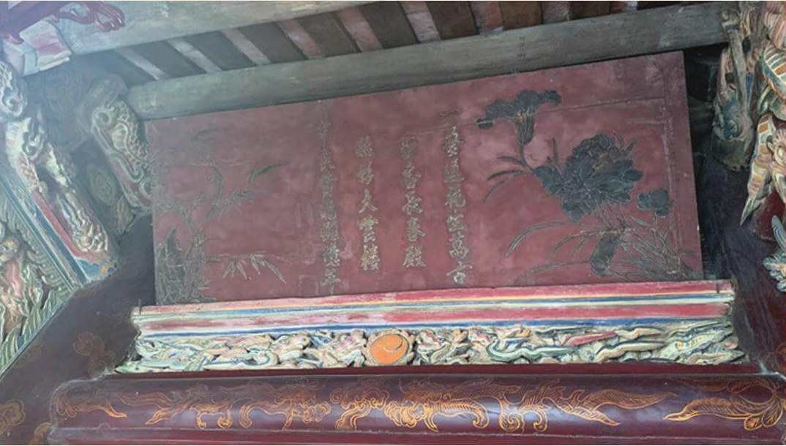

CỐ ĐÔ HOA LƯ
Ceremonial axes of Lê Temple

This artifact, known as the Phủ Việt (ceremonial battle-axe), was recognized as a National Treasure by decision of the Prime Minister in 2020.
The Phủ Việt set at the Temple of King Lê Đại Hành consists of two pieces, each meticulously crafted from precious wood, lacquered red and gilded. Each piece is more than 3 meters long and weighs up to 42 kilograms, with an octagonal cross-section.
The head. Unlike most Phủ Việt at other monuments, which typically depict a Nhai Xế (a fierce dragon-like beast) gripping the axe blade in its mouth, the Phủ Việt at the Temple of King Lê Đại Hành portrays the vivid image of a majestic “dragon nest” (ổ rồng), made up of one mother dragon and two young dragons. The mother dragon’s body coils in five powerful bends, interwoven with young dragons that appear and vanish amid layers of flame-blade motifs (đao lửa). Notably, the very top of the Phủ Việt is adorned with the fierce face of Kala, a motif bearing the imprint of Champa art, which enriches the culturally blended character of ancient Vietnamese sculpture.
The blade. The blade of the Phủ Việt is stylized artfully into a blazing halo of fire spewing from the mouth of a large dragon, symbolizing both martial power and sacred aspiration.

Based on the stele inscriptions kept at the temple, researchers affirm that the Phủ Việt set was reverently made and presented to the temple in the 17th century.
Over the centuries, the Phủ Việt set has become not only a unique original artifact of high value in sculptural art, but also an important material source for studying the culture and art of 17th-century Vietnam.